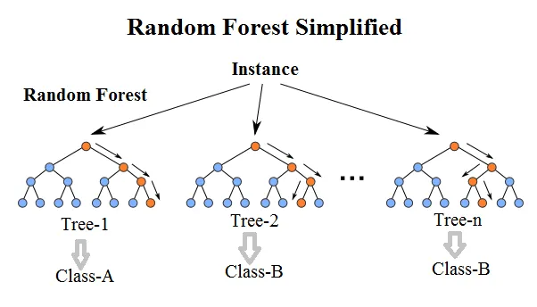
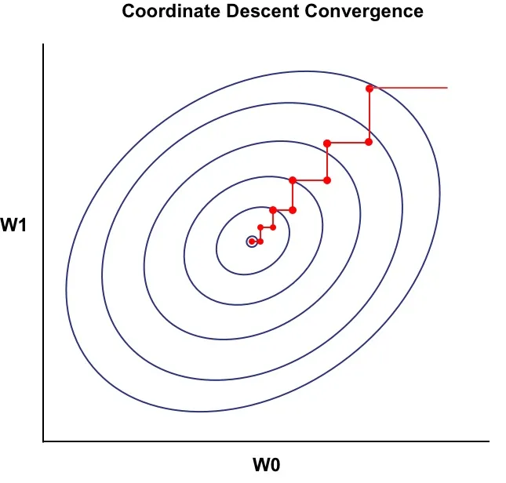
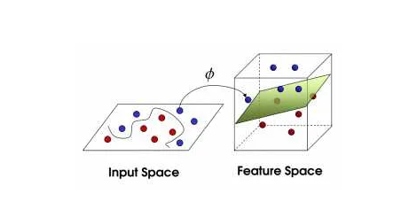
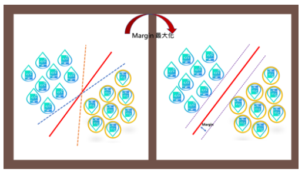

若您是下載的User開始使用本專案之前請確保
1.本電腦有安裝3.9.x版本的python Python3.9
2.已在3.9.x的python環境中運用pip安裝好mlgame MLgame-Release
3.確保運行此網頁時可以正常運作php-Script
(例如wampserver：請將本方案解壓縮至X:xxx/wamp64/www之中)
無下載專案動作請跳過此頁面
若您是下載的User開始使用本專案之前請確保
1.本電腦有安裝3.9.x版本的python Python3.9
2.已在3.9.x的python環境中運用pip安裝好mlgame MLgame-Release
3.確保運行此網頁時可以正常運作php-Script
(例如wampserver：請將本方案解壓縮至X:xxx/wamp64/www之中)
無下載專案動作請跳過此頁面
屬於一種簡單且直觀的
監督式學習演算法。
它的基本概念是對於每一個待預測的資料點，
根據距離選擇離它最近的K個資料點，然後根據這些鄰近的資料點的標籤進行預測。
參考頁面
是一種監督式學習演算法。通過將資料逐步分割成子集，最後形成樹狀結構來進行預測。
在樹狀結構中，每個內部節點代表一個特徵的判斷條件，而每個葉節點代表最終的預測結果。
參考頁面
結合多棵不同的決策樹所組成的機器學習模型。
屬於結合數個「弱學習器」(Decisiontree)搭配演算法(Bagging)
建構出的一個更強的模型：「強學習器」(Random Forest)
引導聚集算法 - Bootstrap Aggregation(Bagging)
運用在隨機森林中的一種演算法，運用自助抽樣法的方式從一個資料集分成數個子資料集。
這樣的做法讓隨機森林得以運用此演算法建立的子資料集為基礎建立多個決策樹。
可以說
Bootstrap Aggregation(Bagging) + Decision Tree → Random Forest
引導聚集算法 + 決策樹 造就了隨機森林
是利用了集成學習(Ensemble Learning)的一種機器學習模型。

實際做法為:
隨機從資料集中取出樣本，並以這些隨機選取的樣本先構築好數顆決策樹。
1.在每一個決策樹中隨機挑選特徵節點
2.同時在每棵決策樹以特徵分割的方式劃分此特徵節點
在多次執行以上1、2點的動作後，
在最後將所有決策樹的預測結果統整起來做結果分析。
專門用於線性問題的SVM，僅能使用線性核函數（linear kernel）基礎依賴的資料庫是Liblinear。
是一種懲罰函數和損失函數的選擇上靈活的模型，較適合大量樣本。
這個類別既支援稠密輸入又支援稀疏輸入，並且多類別支援是根據一對多方案處理的。
在一些大型數據中，使用或不使用非線性映射會產生類似的效果。
但若不計核函數的情況下，我們若是透過linearSVC/linearSVR能更快速地訓練那些龐大的資料集。
其中因為Liblinear庫中使用的坐標下降法(coordinate descent）

使它在數據規模較大，並且問題是線性可分的情況下，
運算的過程會較快到達最優函式，所以相比於SVC/SVR而言效率會較高。
不過與SVC/SVR（基於Libsvm）不同的是，
LinearSVC/SVR（基於liblinear）不提供支援向量。
十分類似於參數kernel= linear的SVC/SVR，但兩者之間有些許的優異性在。
| 特性 | SVC(kernel='linear') | LinearSVC |
|---|---|---|
| 支持的核函數 | 只使用 `linear` | 只使用 `linear` |
| 適用數據規模 | 小規模數據（< 1 萬） | 大規模數據（> 1 萬） |
| 訓練算法 | SMO（序列最小優化） | Liblinear（坐標下降） |
| 訓練速度 | 慢 | 快 |
| 內存消耗 | 高 | 低 |
| 支持概率估計 | 支持 `probability=True` | 不支持 |
| 支持 L1 正則化 | 否 | 是（可選 `penalty='l1'`） |
| 特性 | SVR(kernel='linear') | LinearSVR |
|---|---|---|
| 支持的核函數 | 只使用 `linear` | 只使用 `linear` |
| 適用數據規模 | 小規模數據（< 1 萬） | 大規模數據（> 1 萬） |
| 訓練算法 | SMO（序列最小優化） | Liblinear（坐標下降） |
| 訓練速度 | 慢 | 快 |
| 內存消耗 | 高 | 低 |
| 支持 L1 正則化 | 否 | 是（可選 `penalty='l1'`） |
LIBLINEAR、LIBSVM兩個開源的機器學習資料庫，均由台灣大學開發被scikit-learm引進並使用
線性回歸 (Linear regression)是一種監督式學習演算法，
將標記的資料集中學習找出一條誤差最小的直線，來預測目標變量。
線性回歸的公式
y 是預測的目標的變量
x 為自變量或特徵
β~0~ 是截距項，回歸線及y軸的交點
β~1~ 是斜率，目標變量的變化量
與線性回歸一樣都使用線性方程來描述特徵及目標變量。
邏輯回歸不同的是目標變量y的值介於0~1預測的結果為機率值因此主要用於分類問題，尤其是二分類問題。
是一種監督式學習演算法適用於回歸與分類問題。
特別是處理高維度及具有非線性邊界的分類問題。
其概念就是將低維度空間線性不可分的樣本映射到高維度空間，並找到一個超平面將樣本有效分割。
並使該超平面與資料點的間隔(Margin)最大化，用來區分不同類別的資料點。


非線性可分問題SVM可以通過使用核函數(Kernel Function)
將資料映射到高維度的方式找到一個最適的超平面。
常見核函數:
RE=>回歸 CL=>分類
※為確保排行正確性，樣本數低於一定數量時將會由最下方開始排列。
關卡權重：
關卡一 4%
關卡二 13%
關卡三 22%
關卡四 26%
關卡五 35%